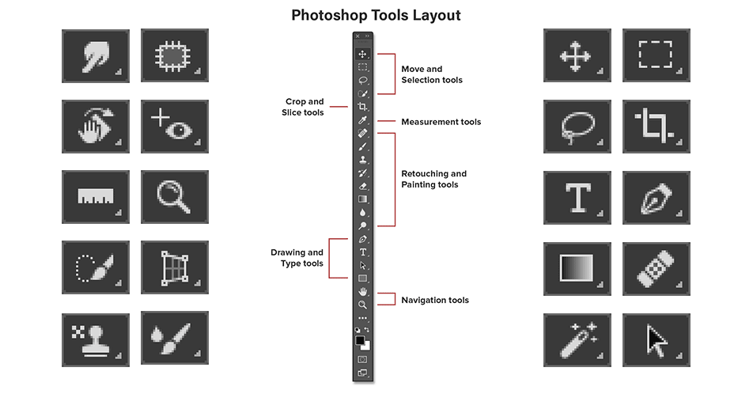

The Tools Panel contains all of the tools you need to create your graphic, such as the Selection tool, the Brush tool, and the Eraser tool.
The tools are easy to access and use. The interface is also customizable so you can change it to fit your needs.
While the tools appear to be arranged in random order, there is really a logical structure to them, with relevant items grouped together.
The toolbar is shown as a single long column by default. However it may be enlarged into a shorter, double column by clicking the double arrows at the top. To return to a single column toolbar, click the two arrows once more:
The Move and Selection tools are located at the top of the screen. The Crop and Slice tools are located just underneath them. The Measuring tools are included next, followed by Photoshop's many Retouching and Painting tools.
Following that are the Drawing and Typography tools. Finally, at the bottom, we have the Navigation tools:
MOVE AND SELECTION TOOLS
1. Move Tool - Inside a Photoshop document, the Move Tool is used to move layers, selections, and guides. Activate "Auto-Select" to have the layer or group you click on selected automatically.
2. Rectangular Marquee Tool - creates outlines for rectangular selections. Hold Shift while dragging to make a square selection.
3. Elliptical Marquee Tool – Elliptical selection outlines are created with the Elliptical Marquee Tool. Press and hold Shift to make a perfect circle selection.
4. Single Row Marquee Tool - selects a single row of pixels in the picture from left to right.
5. Single Column Marquee Tool - To select a single column of pixels from top to bottom, use the Single Column Marquee Tool.
6. Lasso Tool - You may use the Lasso Tool to make a freeform selection outline around an item.
7. Polygonal Lasso Tool - Using the Polygonal Lasso Tool, click around an item to create a polygonal, straight-edged selection outline.
8. Magnetic Lasso Tool - When you move your mouse cursor around the item, the Magnetic Lasso Tool clamps the selected outline to its edges.
8. Quick Selection Tool - makes it simple to choose an object by painting over it with a brush. Enabling "Auto-Enhance" in the Options Bar will result in higher quality options.
CROP AND SLICE TOOLS
1. Crop Tool - used to trim an image and eliminate undesired portions. To crop an image without destroying it, uncheck "Delete Cropped Pixels" in the Options Panel.
2. Perspective Crop Tool - used to crop a picture and correct typical distortion or perspective issues.
3. Slice Tool – breaks a picture or layout into smaller portions (slices) that may be exported and optimized individually.
RETOUCHING AND PAINTING TOOLS
1. Spot Healing Brush Tool - swiftly eliminates imperfections and other small issue spots in a photograph. For optimal results, choose a brush size that is somewhat bigger than the blemish.
2. Content-Aware Move Tool - used to select and move part of an image to a different area. Photoshop fills up the hole in the original site automatically utilizing components from the surrounding areas.
3. Brush Tool - brush strokes can be painted on a layer or a layer mask.
4. Pen Tool - always uses firm edges when painting.
5. Clone Stamp Tool - it takes pixels from one part of the image and paints them over pixels from another part of the image.
6. Gradient Tool - creates gradual color blends. You may build and adjust your own gradients with the Gradient Editor.
The other tools that can also be used, but are not a staple are:
DRAWING AND TYPOGRAPHY TOOLS
1. Horizontal Type Tool - often known as the Type Tool in Photoshop, is used to add conventional type to your project.
2. Vertical Type Tool - The Vertical Type Tool adds type from top to bottom vertically.
3. Horizontal Type Mask Tool - makes a selection outline in the shape of type. The type, however, is inserted horizontally rather than vertically.
4. Vertical Type Mask Tool - generates a selection outline in the shape of vertical type.
NAVIGATION TOOLS
1. Hand Tool - we may use the Hand Tool to move an image about the screen by clicking and dragging it.
2. Rotate View Tool - used to rotate the canvas so you may see and modify the image from multiple perspectives.
3. Zoom Tool - lets you zoom in on a certain region by clicking on the image using the Zoom Tool. To zoom out, press Alt (Windows) / Option (Mac) and click with the Zoom Tool.
The special terms you need to remember are:
1. TOOLS PANEL
- has a logical structure to them, with relevant items grouped together.
2. MOVE AND SELECTION TOOLS
- group of tools that can move and select objects or elements.
3. DOUBLE COLUMN TOOLS
- additional hidden tools can appear by clicking the double arrows at the top.
Hover on the circles!
Patch Tool
draw a freeform selection outline around a problem area.
Smudge Tool
smears the areas you paint over.
Rotate View Tool
rotate the canvas so you can view and edit the image from different angles.
Red Eye Tool
removes common red eye problems in a photo resulting from camera flash.
Ruler Tool
measures distances, locations and angles.
Zoom Tool
zooms in and out on a specific area.
Quick Selection Tool
lets you easily select an object simply by painting over it with a brush.
Perspective Crop Tool
crops an image and fixes common distortion or perspective problems.
Clone Stamp Tool
samples pixels from one area of the image and paints
Brush Tool
paints brush strokes on a layer or on a layer mask.
Move Tool
used to move layers, selections and guides within a Photoshop document.
Rectangular Marquee Tool
aws rectangular selection outlines.
Lasso Tool
draw a freeform selection outline around an object.
Crop Tool
crop an image and remove unwanted areas.
Horizontal Type Tool
add standard type to your document.
Pen Tool
allows you to draw extremely precise paths, vector shapes or selections.
Gradient Tool
draws gradual blends between multiple colors.
Healing Brush Tool
repair larger problem areas in an image by painting over them
Magic Wand Tool
selects areas of similar color with a single click.
Path Selection Tool
selects and moves an entire path at once.